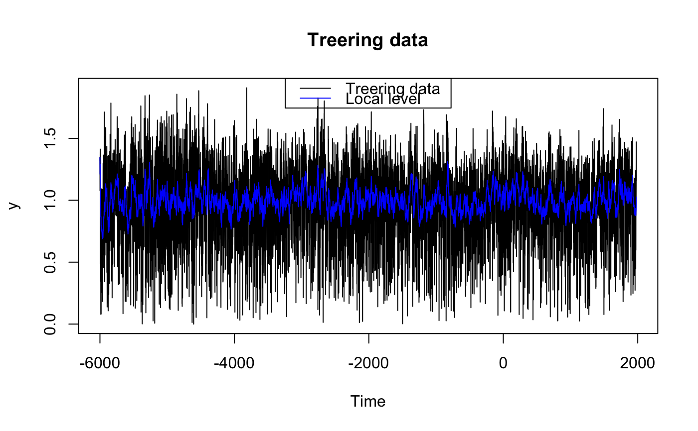
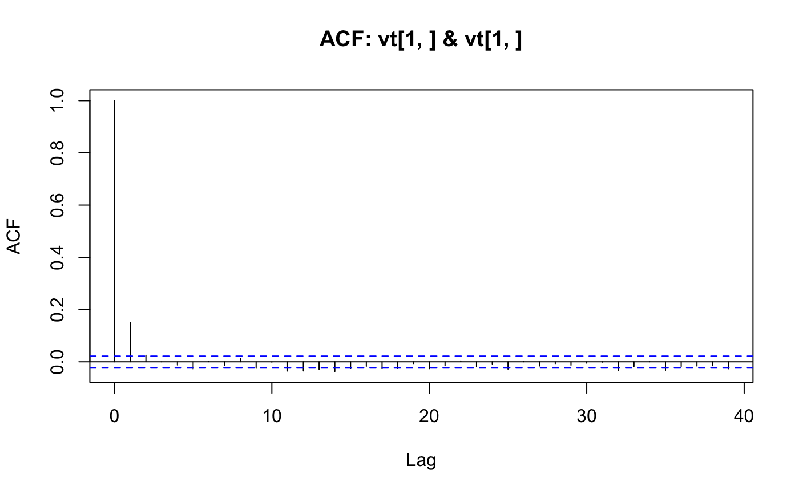

Plotting method for objects of class fkf. This function
provides tools for graphical analysis of the Kalman filter output:
Visualization of the state vector, QQ-plot of the individual
residuals, QQ-plot of the Mahalanobis distance, auto- as well as
crosscorrelation function of the residuals.
The output of fkf.
A string stating what shall be plotted (see Details).
The confidence interval in case type == "state". Set
CI to NA if no confidence interval shall be plotted.
An vector giving the indexes of the predicted state variables
which shall be plotted if type == "state".
An vector giving the indexes of the filtered state variables
which shall be plotted if type == "state".
Invisibly returns an list with components:
distance | The Mahalanobis distance of the residuals as a vector of length \(n\). |
std.resid | The standardized residuals as an \(d \times n\)-matrix. It should hold that \(std.resid_{ij} \; iid \sim N_d(0, I)\), |
where \(d\) denotes the dimension of the data and \(n\) the number of observations.
The argument type states what shall be plotted. type
must partially match one of the following:
stateThe state variables are plotted. By the
arguments at.idx and att.idx, the user can specify
which of the predicted (\(a_{t}\)) and filtered
(\(a_{t|t}\)) state variables will be drawn.
resid.qqDraws a QQ-plot for each residual-series invt.
qqchisqA Chi-Squared QQ-plot will be drawn to graphically test for multivariate normality of the residuals based on the Mahalanobis distance.
acfCreates a pairs plot with the autocorrelation
function (acf) on the diagonal panels and the
crosscorrelation function (ccf) of the residuals on the
off-diagnoal panels.
plot(x, type = c("state", "resid.qq", "qqchisq", "acf"),
CI = 0.95, at.idx = 1:nrow(x$at), att.idx = 1:nrow(x$att), ...)
## <--------------------------------------------------------------------------->
## Example: Local level model for the treering data
## <--------------------------------------------------------------------------->
## Transition equation:
## alpha[t+1] = alpha[t] + eta[t], eta[t] ~ N(0, HHt)
## Measurement equation:
## y[t] = alpha[t] + eps[t], eps[t] ~ N(0, GGt)
y <- treering
y[c(3, 10)] <- NA # NA values can be handled
## Set constant parameters:
dt <- ct <- matrix(0)
Zt <- Tt <- array(1,c(1,1,1))
a0 <- y[1] # Estimation of the first width
P0 <- matrix(100) # Variance of 'a0'
## Estimate parameters:
fit.fkf <- optim(c(HHt = var(y, na.rm = TRUE) * .5,
GGt = var(y, na.rm = TRUE) * .5),
fn = function(par, ...)
-fkf(HHt = array(par[1],c(1,1,1)), GGt = array(par[2],c(1,1,1)), ...)$logLik,
yt = rbind(y), a0 = a0, P0 = P0, dt = dt, ct = ct,
Zt = Zt, Tt = Tt)
## Filter tree ring data with estimated parameters:
fkf.obj <- fkf(a0, P0, dt, ct, Tt, Zt, HHt = array(fit.fkf$par[1],c(1,1,1)),
GGt = array(fit.fkf$par[2],c(1,1,1)), yt = rbind(y))
## Plot the width together with fitted local levels:
plot(y, main = "Treering data")
lines(ts(fkf.obj$att[1, ], start = start(y), frequency = frequency(y)), col = "blue")
legend("top", c("Treering data", "Local level"), col = c("black", "blue"), lty = 1)

## Check the residuals for normality:
plot(fkf.obj, type = "resid.qq")
## Test for autocorrelation:
plot(fkf.obj, type = "acf", na.action = na.pass)
